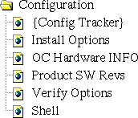

Operating Documentation
Direction 5114043-800, Rev# 9
LightSpeed 3.X Service Methods (Advanced)
Operating Documentation |
Illustration 1: Configuration Applications Icon
Illustration 2: Configuration Applications Menu

Use the configuration menu to access the following tools and diagnostics:
Not supported at this time.
Calls the option installation program, which allows you to load/install an option key(s) on the system via MOD to enable software options.
Calls the system browser preset to display OC information. Many options are available to allow you to view such things as product software revisions, disk usage, network information, and hardware configurations.
Calls show prods to display the currently installed product software revisions.
Shows the currently installed software option keys.
Presents a window that enables you to enter IRIX and UNIX commands, start scrips that perform a series of commands, or start programs. Press <ALT>-<F12> to exit the shell when it is no longer needed.